בינה מלאכותית
בעבודת הדיקנט
מכלי מזדמן לשותף עבודה יומיומי
תום הגלעדי
ריטריט הנהלת דיקנט הסטודנטים · 8 בספטמבר 2026
מי אני, בקצרה
- עשרים שנה כאיש חינוך, חלקן בניהול מערכות חינוך
- שלוש השנים האחרונות: רק הממשק שבין בינה מלאכותית לארגוני למידה והוראה - משרד החינוך, האקדמיה, וליווי התייעלות במגזר העסקי
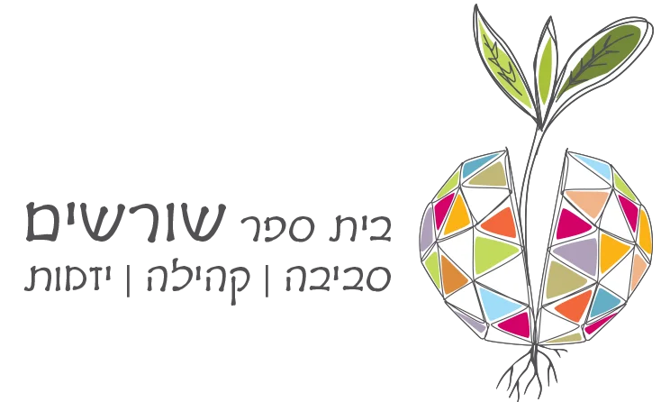
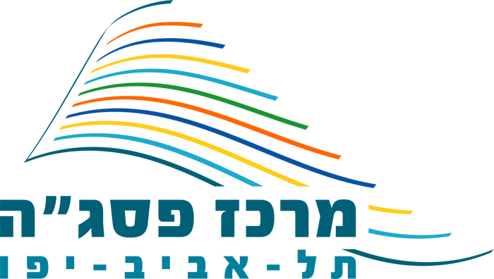
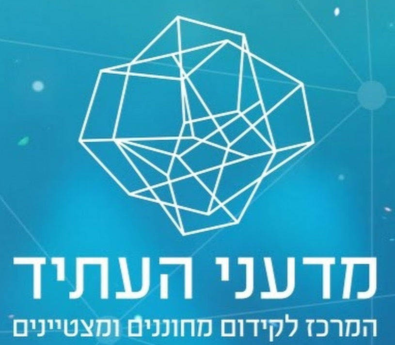
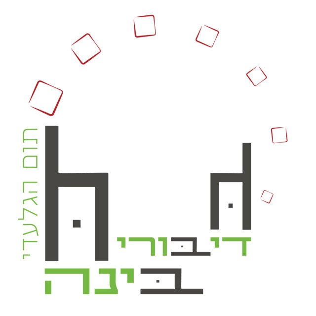
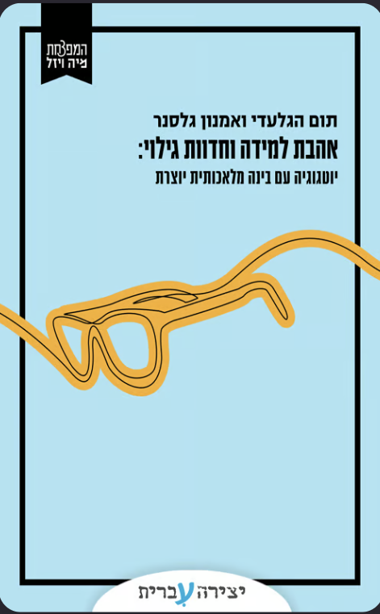
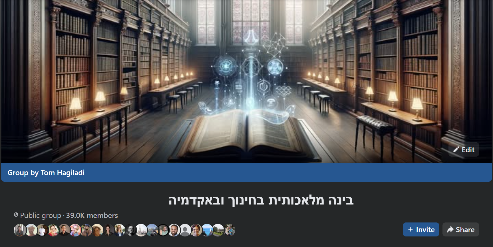
אני עצמי מתמודד עם הפרעת קשב. חלק ממה שאראה היום - אני משתמש בו בעצמי, כל יום.
מה נעשה היום
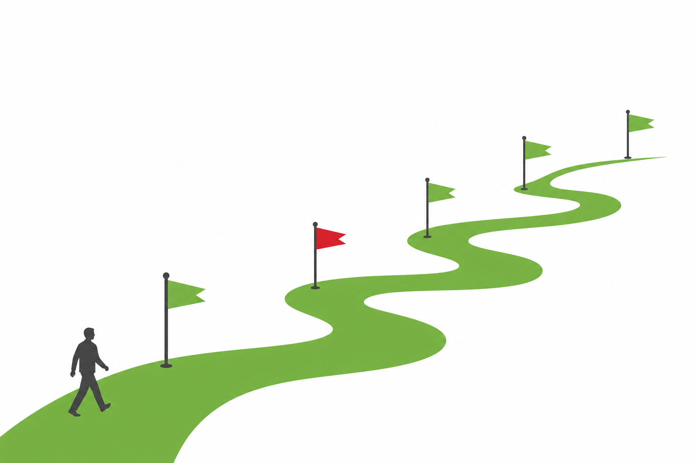
"מה הכלי הזה יודע לעשות?"
"איזו עבודה שאני עושה היום,
הוא יכול לקחת ממני?"
שני סוגי משתמשים
| משתמש מזדמן | שותף עבודה |
|---|---|
| ניגש לכלי הבינה המלאכותית רק כשנתקע | פותח את הכלי לפני שמתחיל לעבוד |
| מבקש תוצר מוגמר | מבקש תהליך ומלווה אותו |
| שואל שאלה אחת ועוזב את הכלי | מנהל שיחה מתמשכת |
| לא נותן שום הקשר | מזין את כל ההקשר הרלוונטי |
| בודק אם התשובה נכונה | בונה יחד עם הכלי את התשובה |
| חוסך דקות | חוסך שעות |
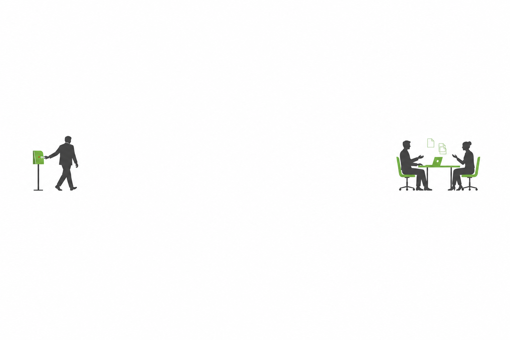
ההבדל בפועל
המשימה: לנסח מכתב דחייה לבקשת סיוע כלכלי
מזדמן
"כתוב מכתב דחייה לסטודנט."
מכתב גנרי וקר. צריך לשכתב מהתחלה.
שותף
הנוהל, הקריטריונים, שני מכתבים קודמים שיצאו טוב, והטון שהיחידה רוצה.
מכתב שאפשר לשלוח.
ההבדל הוא לא בכלי. הוא בהקשר ובמיומנות השימוש.
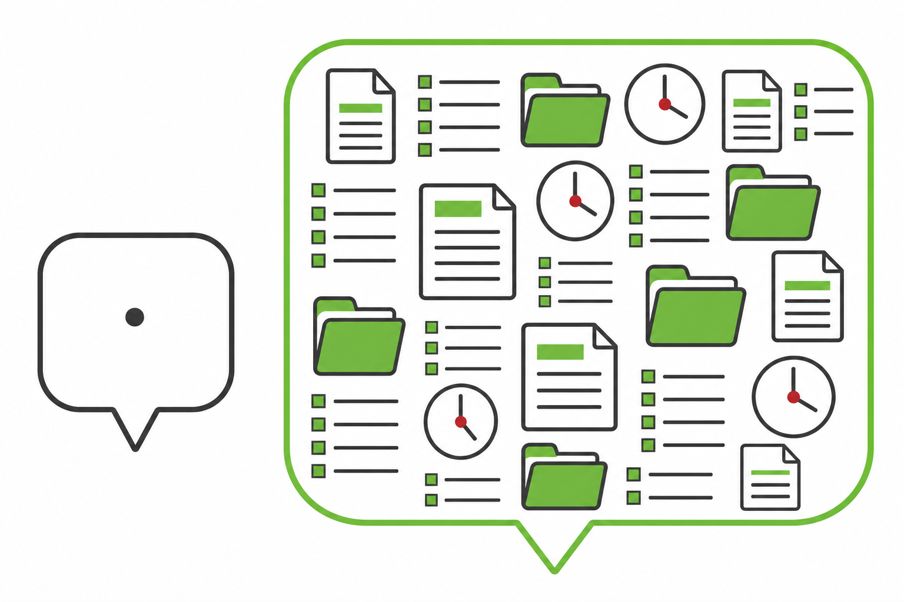
אבטחת מידע ופרטיות
- אסור להעלות מידע מזהה של סטודנטים לגרסאות החינמיות.
- למה: בגרסאות החינמיות המידע עשוי לשמש לאימון המודל.
- מה כן: רישיון ארגוני עם הסכם אבטחת מידע, או אנונימיזציה - למחוק שמות, מספרי זהות וכל פרט מזהה לפני ההעלאה.
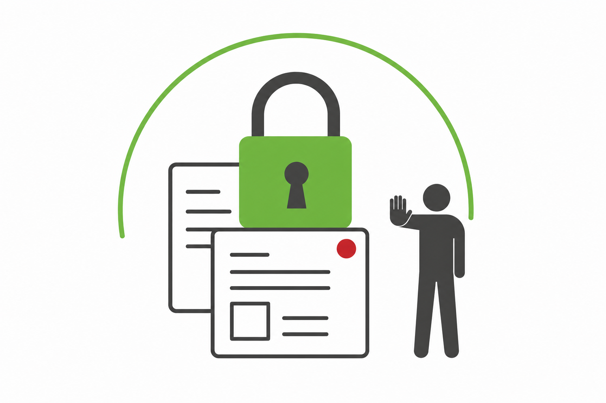
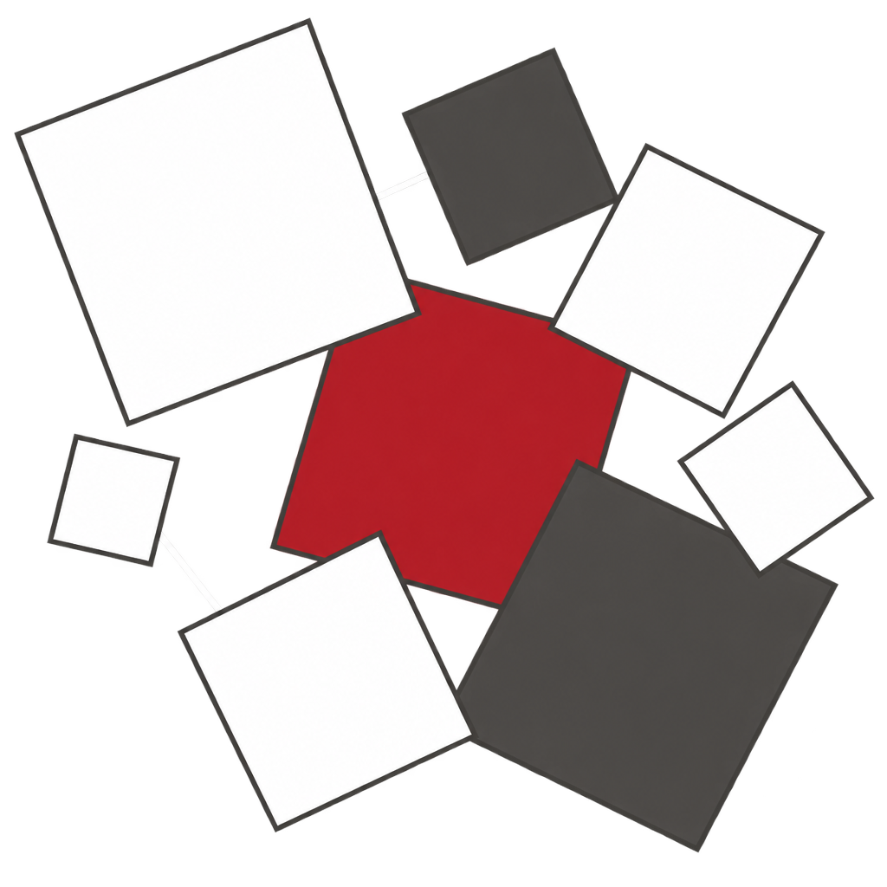
שוויון הזדמנויות ומניעת נשירה
"הבינה המלאכותית תהיה
או המשווה הגדול ביותר שהומצא אי פעם,
או מקור העוול הגרוע ביותר."
ביל גייטס, מאמר מ-26 באוגוסט 2026
"AI will either be the greatest equalizer ever invented, or the worst source of injustice."
מורה פרטי, עשרים וארבע שעות ביממה, בחינם, לכל אחד.
בואו נבדוק את זה לעומק.
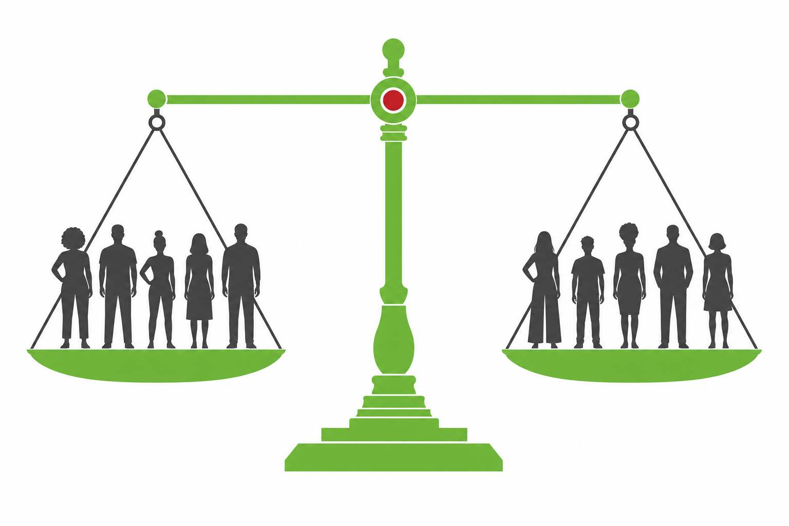
איפה זה באמת מקדם שוויון
- הון תרבותי סמוי. איך כותבים מייל למרצה. מה זו שעת קבלה. איך מבקשים הארכה בלי להישמע חצוף. עכשיו יש את מי לשאול בלי להתבייש.
- שפה. דובר ערבית, רוסית או אמהרית, ועולה חדש - קורא מאמר אקדמי בשפת האם, וחוזר לעברית.
- ניווט בירוקרטי. טפסים, מלגות, זכויות, ועדות חריגים.
- זמינות. מי שעובד במשמרות לא מגיע לשעת קבלה. הכלי זמין בשתיים בלילה.
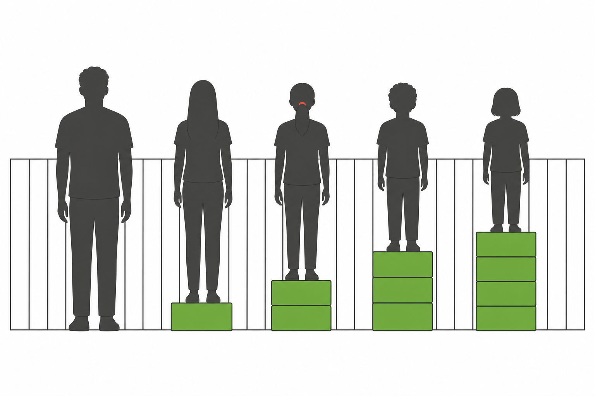
ואיפה זה מגדיל פערים
- פער הגישה. הגרסה הטובה עולה עשרים דולר בחודש לפחות. כבר לא "יש אינטרנט או אין" - אלא "יש מודל טוב או אין".
- פער האוריינות. מי שיודע לשאול מקבל תשובה טובה פי כמה. הפער הזה נסתר - מבחוץ נראה שלכולם יש אותו כלי.
- פער הביקורתיות. כדי לזהות שהמודל המציא, צריך ידע קודם.
- פער המוטיבציה. בין מי שרוצה ללמוד למי שרוצה תעודה. נרחיב על זה בהמשך.
- הטיה במודל. המודלים אומנו על תרבות מערבית פרוגרסיבית, ומשקפים אותה.
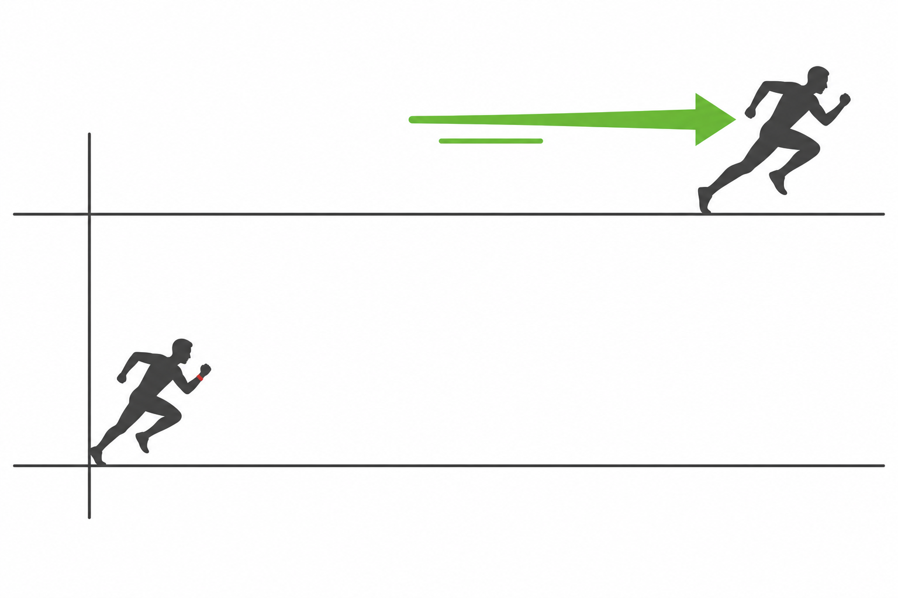
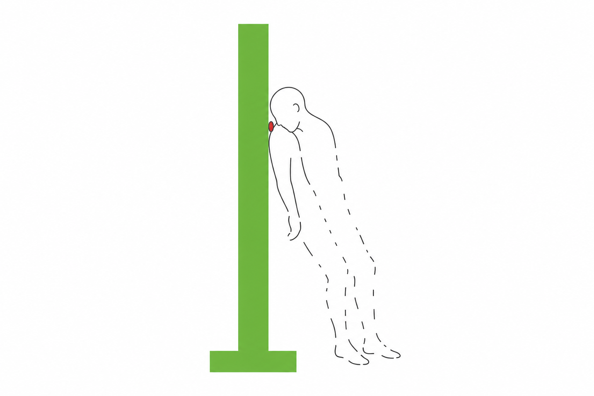
מי שהכי צריך את הפיגום,
הוא גם מי שהכי בסיכון
להישען עליו במקום ללמוד.
זו לא סיבה לא לתת.
זו סיבה ללוות.
מה זה אומר לדיקנט
- גישה היא עניין של מדיניות. אם האוניברסיטה רוכשת רישיון לכולם, פער הגישה נסגר ביום אחד. אם לא - הוא נפתח מעצמו, בשקט.
- אוריינות בינה מלאכותית היא שירות נגישות. לא קורס טכנולוגי. שירות - כמו הדרכת ספרייה או סדנת ניהול זמן.
- הליווי הוא ההבדל. אותו כלי בדיוק, עם ליווי או בלעדיו, מייצר תוצאות הפוכות.
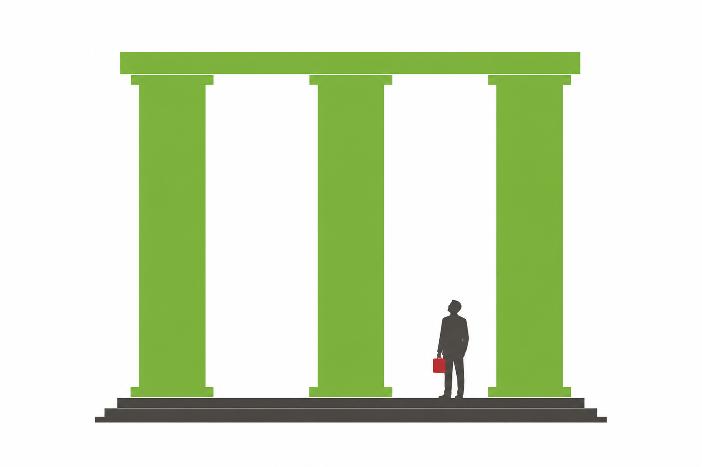
נשירה לא מתחילה מהחלטה
היא מתחילה מרצף של אותות קטנים - שכל אחד מהם לבדו נראה תמים.
שלוש שכבות של שימוש במידע
- תיאור - "מה קרה?" לנתח את הפניות של השנה האחרונה ולראות מגמות.
- דפוסים - "מה משותף למי שנשר?" לנתח נתונים היסטוריים אנונימיים ולזהות מאפיינים חוזרים.
- חיזוי - "מי בסיכון עכשיו?"
מאיפה אפשר להתחיל כפרויקט
- לקחת את הפניות של השנה האחרונה, לעשות אנונימיזציה, ולשאול: מה חוזר?
- לקחת את מכתבי הבקשה לסיוע ולשאול: אילו קשיים מופיעים שלא שאלנו עליהם בטופס?
- לבנות תשובות מוכנות לשאלות שחוזרות הכי הרבה.
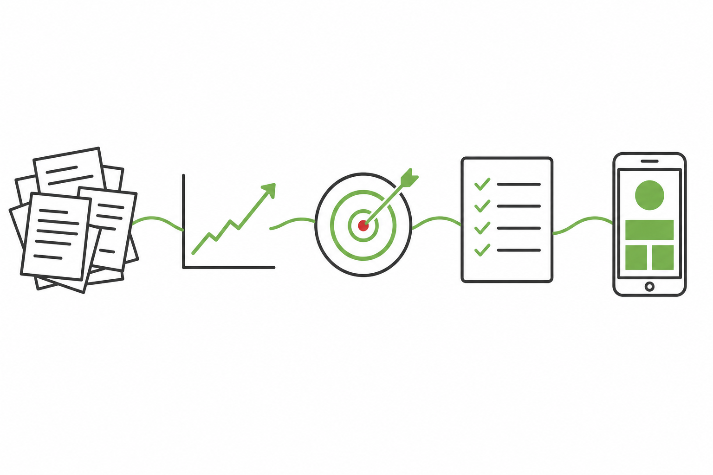
קשב, לקויות למידה ונגישות
אני מתמודד עם הפרעת קשב.
כל מה שאני מראה בחלק הזה -
אני משתמש בו בעצמי, כל יום.
עבדתי עם עמותת קווים ומחשבות, והתארחתי אצלם בפודקאסט:
"מוח דיגיטלי, קשב אנושי - כיצד ה-AI משנה את חייו של בחור אחד עם ADHD"
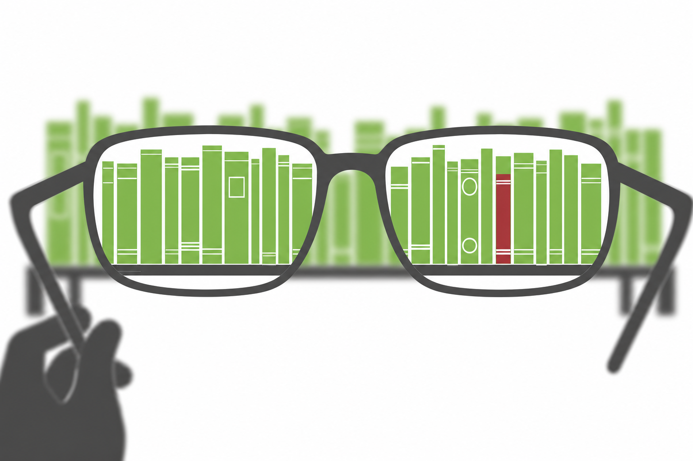
מתיקון להגברה
עשרות שנים ניסו "לתקן" את הליקוי - ללמד את המוח לתפקד אחרת. זה עבד חלקית, ותסכל הרבה.
הבינה מציעה משהו אחר: להחצין את התפקוד החוצה.
לא לתקן את הראייה.
לתת משקפיים.
מה נשבר ומה מחליף
| המאפיין | צוואר הבקבוק | מה הבינה נותנת |
|---|---|---|
| שיתוק משימתי | המשימה נתפסת כגוש אחד גדול ומאיים. נדרשת אנרגיה עצומה רק כדי להתחיל, והיא לא מגיעה. | מנוע ייזום: מפרק את המשימה למיקרו-צעדים של דקות, ומייצר טיוטה ראשונה שמורידה את רף הכניסה. |
| זיכרון עבודה | אי אפשר להחזיק כמה פריטי מידע בו-זמנית. הוראה מורכבת נשכחת באמצע הביצוע. | זיכרון חיצוני: המודל מחזיק את כל ההקשר וההוראות, ואתה מעבד פריט אחד בכל פעם. |
| עיוורון זמן | אין תחושה של חלוף הזמן. הערכת משך משימה אופטימית תמיד, ולוחות זמנים קורסים. | תכנון לאחור מהדדליין, עם בלוקים של באפר בין משימות שנותנים תוקף למציאות. |
| תשישות החלטות | כל בחירה קטנה שואבת אנרגיה. אחרי כמה החלטות המאגר מתרוקן והתפקוד נעצר. | סינון אפשרויות, תיעדוף לפי היגיון ולא לפי רגש, והפיכת בחירות מורכבות לבינאריות פשוטות. |
| רגישות לדחייה | ביקורת עניינית או מייל קצר נחווים כדחייה אישית וכקטסטרופה, ומובילים להימנעות. | ניתוח טון אובייקטיבי של המסר, וניסוח תגובה מקצועית שלא מתגוננת ולא מתנצלת יתר על המידה. |
ואז צוואר הבקבוק
הופך להיות האדם
בניתי לעצמי מערכות שלמות של סוכנים שמנהלים לי את החיים. והגעתי לנקודה שבה מי שצריך להוציא אותן לפועל זה אני - עם ההרגלים שלי, ועם המאפיינים האנושיים שלי.
אני הפכתי להיות
צוואר הבקבוק של עצמי.
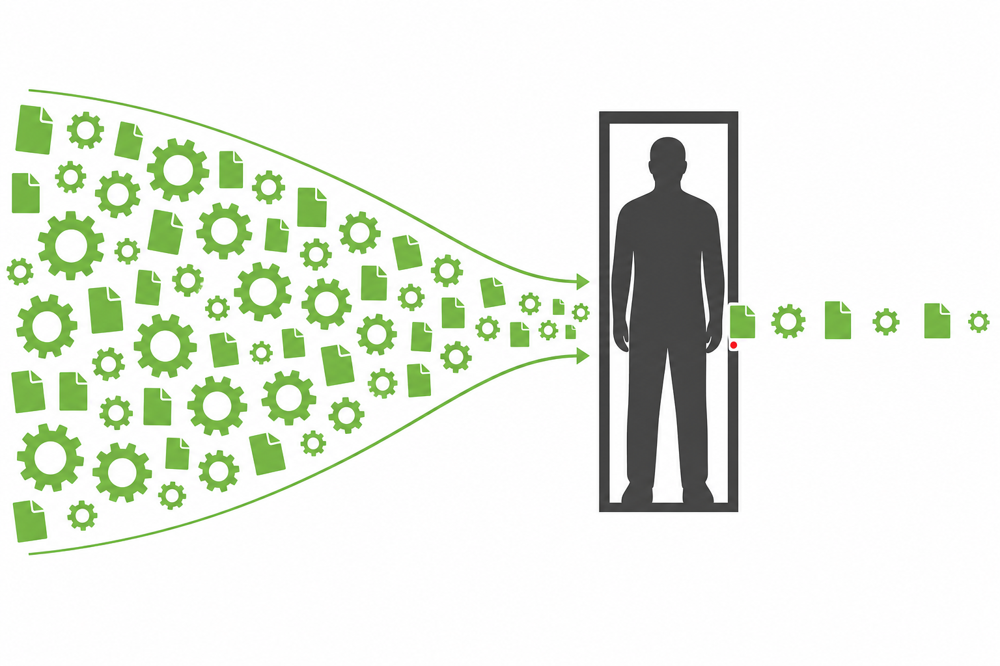
פורס הגבינה
"כתוב עבודה סמינריונית" - המוח נכבה.
"פתח מסמך וכתוב את הכותרת" - אפשר.
למה זה עובד: האילוץ של חמש עשרה דקות מגדיר מראש מה זה "סיימתי".
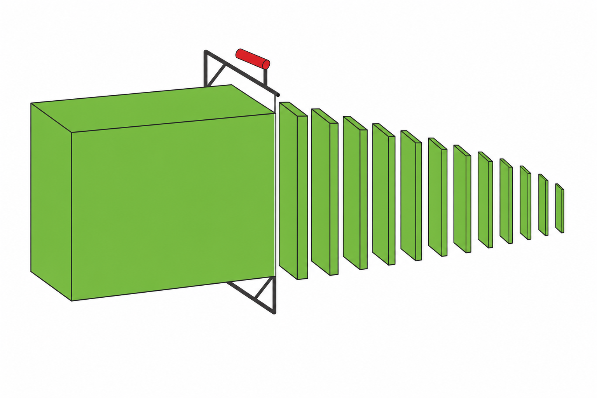
לוח זמנים הפוך
מתכננים רגילים מניחים יעילות מושלמת. ואז הם קורסים, ואז מרגישים כישלון.
למה זה עובד: הבאפרים נותנים תוקף למציאות במקום לכפות סטנדרט שקורס בהכרח - וכל קריסה מזינה את מעגל הבושה.
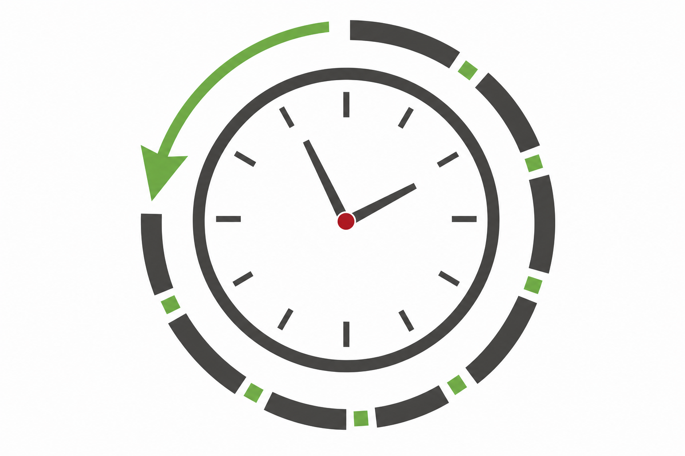
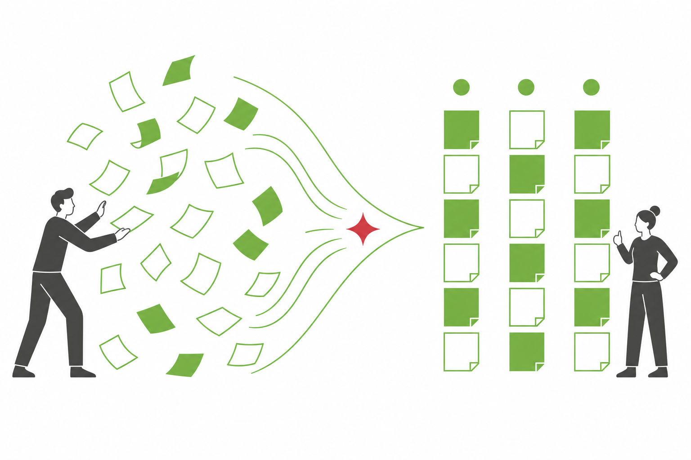
הקאת מוח
כשזיכרון העבודה מלא - החרדה עולה והתפקוד יורד.
לפרוק הכל החוצה לא דורש תפקודים ניהוליים.
לארגן כן דורש. אותו מוציאים החוצה.
מנתח הטון
סטודנט מקבל מייל קצר מהמרצה, קורא בו דחייה אישית, ונכנס להימנעות.
זה רלוונטי לא רק לסטודנטים. גם לנו, לפני שאנחנו שולחים מייל בשעת כעס.
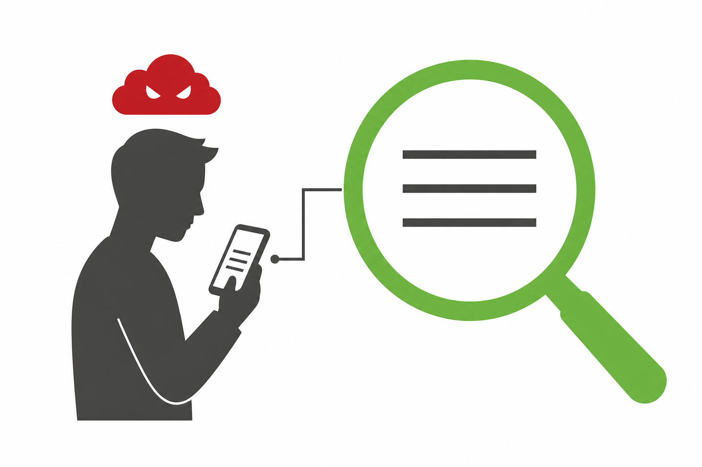
לקרוא עם האוזניים
מאמר של שלושים עמודים הוא לפעמים חסם שלא נעבר. לא בגלל היכולת - בגלל הקשב.
מזינים את המאמר ל-NotebookLM, ומקבלים שיחה מוקלטת בין שני מנחים שמדברים עליו - עם אינטונציה, דיאלוג ועניין.
ואותו כלי יודע לייצר מאותו מאמר גם מפת חשיבה, סרטון וידאו ברמה גבוהה מאוד, ועיבוד של המידע בסגנון כתיבה אחר.
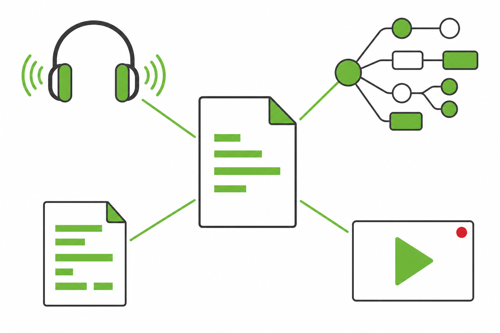
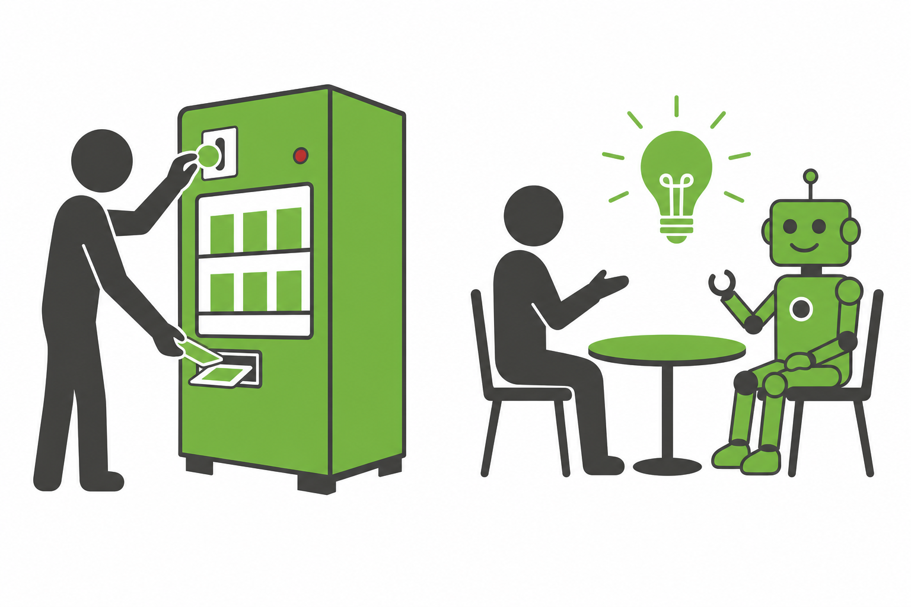
מי מלמד את הסטודנטים
להשתמש בזה נכון
רוב הסטודנטים, ורוב המשתמשים בכלל, משתמשים בבינה כמכונת תשובות. או, בגרסה הבעייתית, ככותבת עבודות במקומם.
מעטים יודעים להשתמש בה כשותפת חשיבה, כשותפה לניהול, כשותפה אסטרטגית. מעטים מלמדים את זה.
מישהו צריך ללמד את זה.
וזה יכול להיות אתם.
ואפשר לבנות פלטפורמה דיגיטלית שמרכזת את הידע הזה ומנגישה אותו לסטודנטים.
התייעלות ארגונית
הידע מתאדה
הדיקנט רץ על פגישות. ישיבות צוות, ועדות, שיחות תיאום, שיחות עם סטודנטים.
מה שנאמר בפגישה נשאר בראש של מי שהיה שם -
ובסיכומים ושרבוטים שלרוב לא מקוטלגים באופן סיסטמטי.
עברה שנה, התחלף רכז, והידע איננו.
זו לא בעיה של תיעוד.
זו בעיה של זיכרון ארגוני.
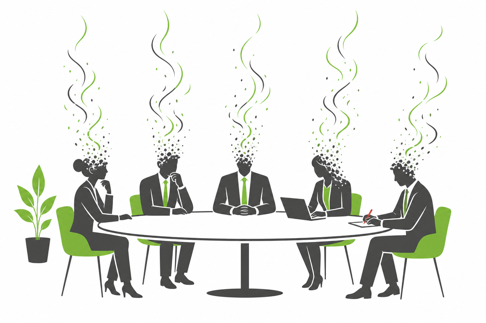
שני כלים לתמלול פגישות
| טיימלס | פלאוד | |
|---|---|---|
| מתי | פגישות מקוונות | שיחות פנים אל פנים |
| איך | מצטרף לזום או למיט כמשתתף | מכשיר קטן בכיס או על השולחן |
| מפיק | תמלול, זיהוי דוברים, סיכום מובנה | תמלול וסיכום |
השאלה היא לא איזה כלי טוב יותר.
השאלה היא איך מתעדים את כל מה שנאמר בכל הפגישות - ומארגנים את זה.
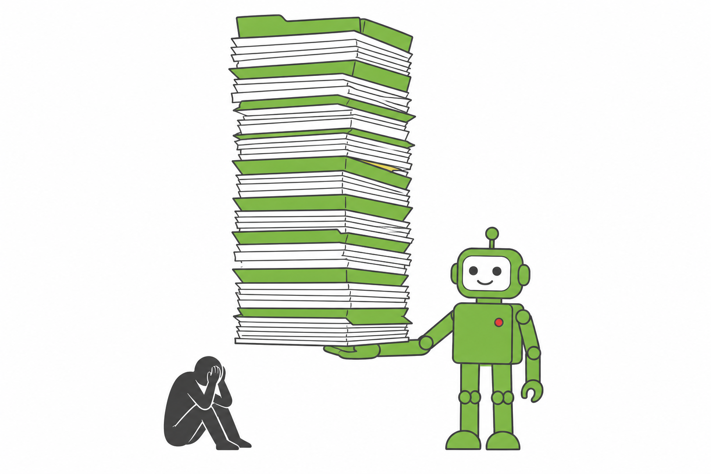
בשביל מי אנחנו
בונים את ההקשר
אף אדם לא יקרא מאתיים תמלולי פגישות. זה פשוט לא אפשרי.
אבל אנחנו לא בונים את ההקשר לבני אדם.
אנחנו בונים אותו לבינה המלאכותית.
וברגע שמבינים את זה, ההיגיון מתהפך: ככל שנצבור יותר הקשר - כך נהיה יעילים יותר. מה שהיה עומס, הופך לנכס.
ארגונים צריכים להיבנות
לעולם של סוכנים
אתרי אינטרנט כבר עושים את זה היום. הם נבנים כדי שבוטים וסוכנים ימצאו אותם ויקראו אותם - לא רק בני אדם. כרגע מאחורי הקלעים, ובהמשך גם בממשק המשתמש.
אותו דבר יקרה לארגונים.
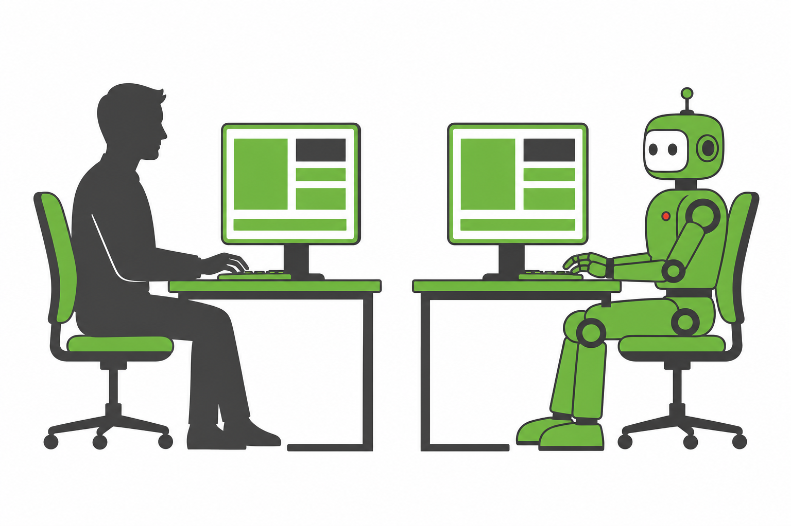
הקלטת שיחות: מה מותר ואיך
פלאוד עומד בתקנים הבינלאומיים המחמירים לאבטחת מידע רפואי ופרטיות: הצפנה מלאה, אפס אימון על המידע שלכם, אפס שמירה אצל מודלי השפה, והתחייבות חוזית שמאפשרת שימוש קליני.
הם אפילו מציעים תבניות סיכום ייעודיות לפסיכותרפיה, ופסיכולוגים כבר עובדים עם זה. עם מנוי ארגוני - יש מעטפת אבטחת מידע.
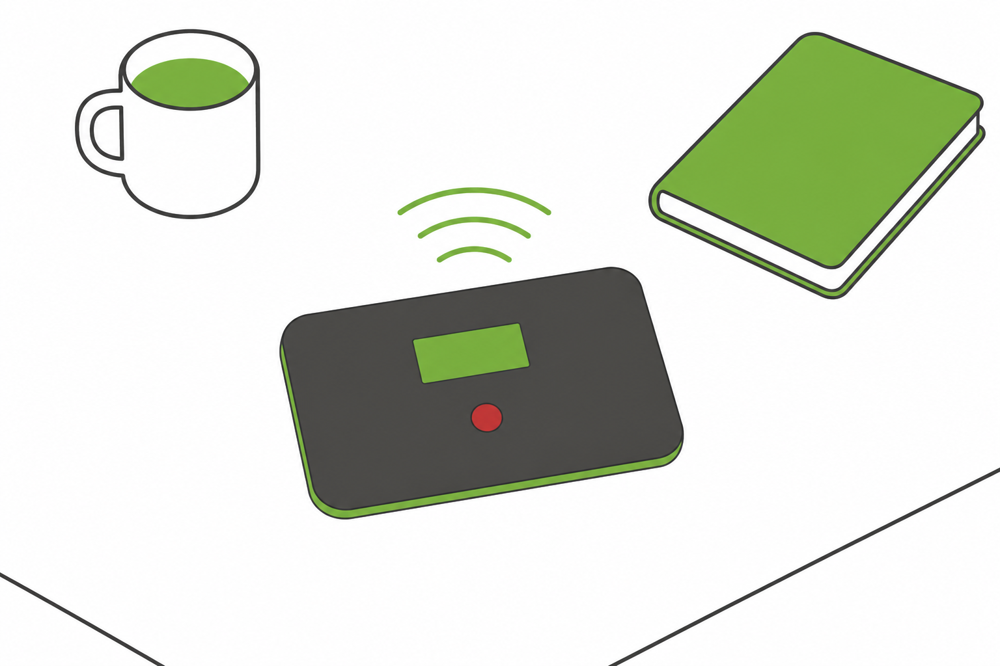
הכלי שעונה מהמקורות שלך נתרגל בסדנה
NotebookLM בנוי כך שהתשובות שלו מעוגנות במקורות שהזנת אליו, ומפנות אליהם. זה הכיוון של הכלי ואחת מנקודות הייחוד שלו.
מה אפשר להזין: קבצי PDF, מסמכי וורד, מצגות, אתרי אינטרנט, קבצי אודיו, סרטוני יוטיוב.
תשובה מעוגנת, עם הפניה 1 2 לסעיף המדויק.
מה זה עושה ליחידה שלכם
מזינים אל הכלי כמקור את כל הנהלים, הטפסים והתקנונים. ואז:
- רכז חדש שואל שאלה ומקבל תשובה עם הפניה לסעיף המדויק.
- מייצרים שאלות ותשובות נפוצות לסטודנטים, מתוך הנהלים.
- הופכים תקנון יבש לפודקאסט של שמונה דקות.
- מייצרים אינפוגרפיקה או מפת חשיבה מתוך הנהלים.
תרחיש לדוגמה: קליטת עובד חדש.
במקום שלושה חודשים של שאלות - מחברת אחת.
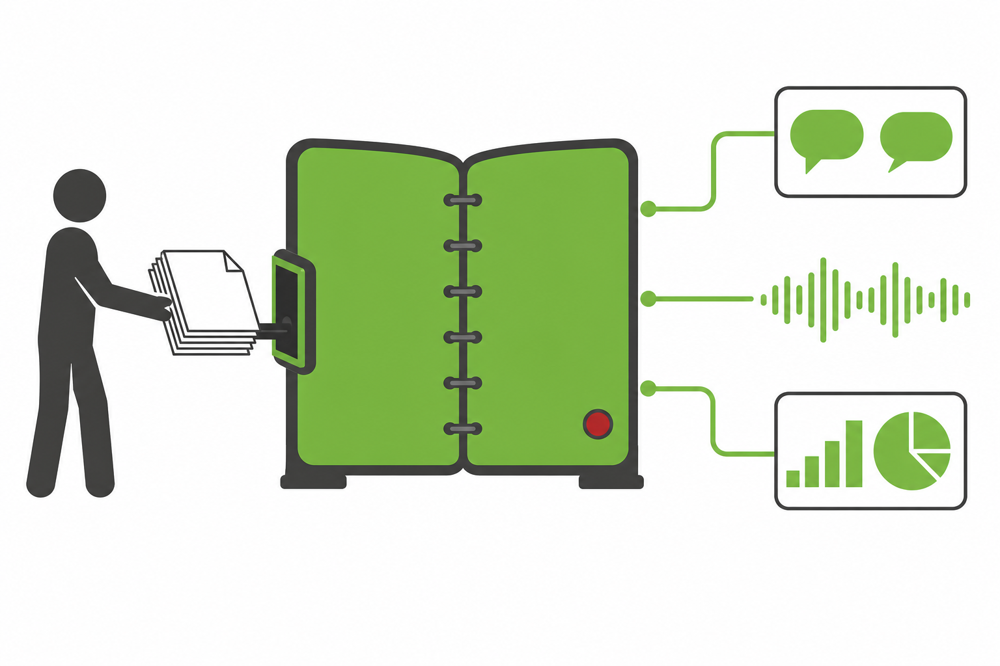
השלב הבא: בוט ייעודי נתרגל בסדנה
Gem הוא שם של פיצ'ר בג'מיני. בפועל, זה מומחה שמור.
אתה נותן לו פעם אחת: הוראות קבועות, טון, כללים, ובסיס ידע. והוא זוכר אותם לתמיד.
ההבדל מצ'אט רגיל: אתה לא מסביר מחדש בכל פעם מי אתה, מה היחידה עושה, ומה הכללים.
דוגמה: בוט זכויות הסטודנט
מה מזינים: תקנון זכויות הסטודנט, נהלי ועדות חריגים, התאמות למילואים ולהורות, זכאות למלגות, לוחות זמנים לערעורים.
מה מקבלים: מומחה שעונה על "מה מגיע לי?" בשפה של היחידה, לפי הכללים של היחידה.
פנימי - הצוות
מתחילים מחר בבוקר. אין סיכון. כאן מתחילים.
חיצוני - לסטודנטים
כבר פרויקט: אבטחת מידע, בדיקה משפטית. אבל זה מה שיוריד את עומס הטלפונים.
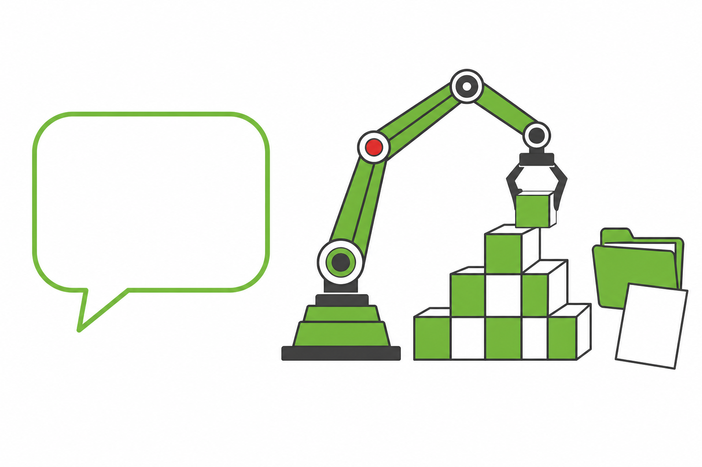
סוכנים
עד עכשיו דיברנו על משהו שעונה.
סוכן הוא משהו שעושה.
הוא ניגש לקבצים שלך, קורא אותם, כותב קבצים חדשים, מריץ פעולות, ובודק את עצמו.
איך זה נראה בפועל נתרגל בסדנה
הכלים שאני עובד איתם: Claude Code וגם Grok Bot. "קח את הקובץ הזה של ארבע מאות שורות, נקה כפילויות, סדר לפי תאריך, והוצא לי דוח." בלי לפתוח אקסל. בלי לדעת לתכנת. לזה קוראים vibe coding.
על סוכנים צריך מפגש נפרד שמוקדש רק לזה. זה ה-game changer האמיתי, וזו חזית הטכנולוגיה.
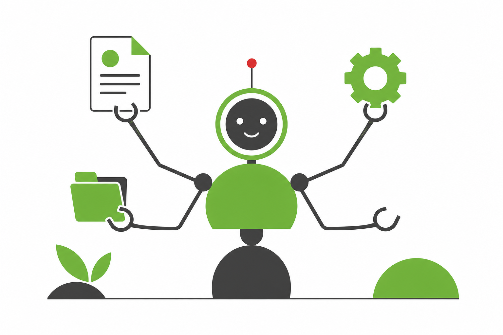
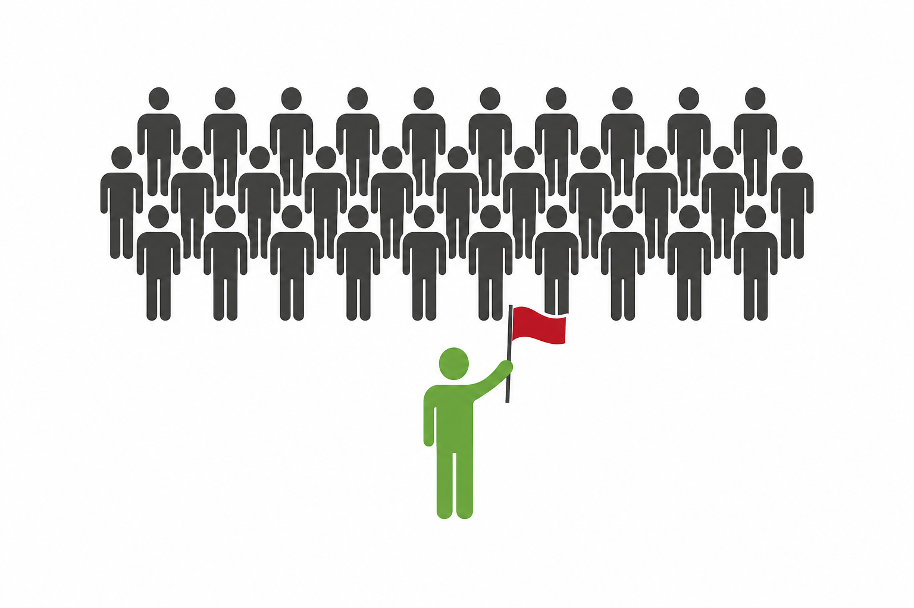
זה לא לכולם, ולא מחר.
אבל בעוד שנה, "לבנות כלי קטן ליחידה"
לא תהיה בקשה שמוגשת למחלקת מחשוב.
מה כן כדאי: שיהיה ביחידה אדם אחד
שמתעסק בזה.
לא מומחה. סקרן.
למידה אותנטית ותפקיד האקדמיה
שני סטודנטים, אותה הרצאה
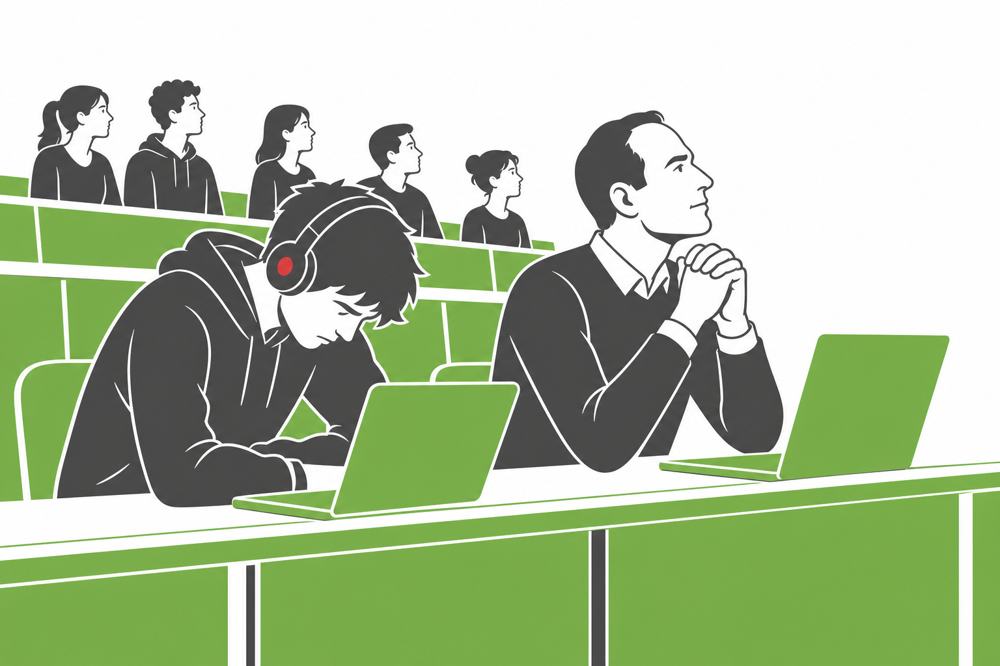
מה שמפריד ביניהם הוא לא יכולת. זו מוטיבציה.
שתי מוטיבציות, שני שימושים
רוצה תעודה
משתמש בבינה כדי לעקוף את הלמידה.
רוצה ללמוד
משתמש בה כמורה פרטי, כמנטור, כשותפת חשיבה.
אותו כלי בדיוק -
המשתמש הוא שמשתנה.
המערכת האקדמית נלחמת בכלי.
אבל הבעיה מעולם לא הייתה הכלי.
האם ניתן לקיים תהליך למידה אותנטי,
מבוסס מוטיבציה ללמידה,
בסביבה רווית בינה מלאכותית?
איך נראית למידה אותנטית?
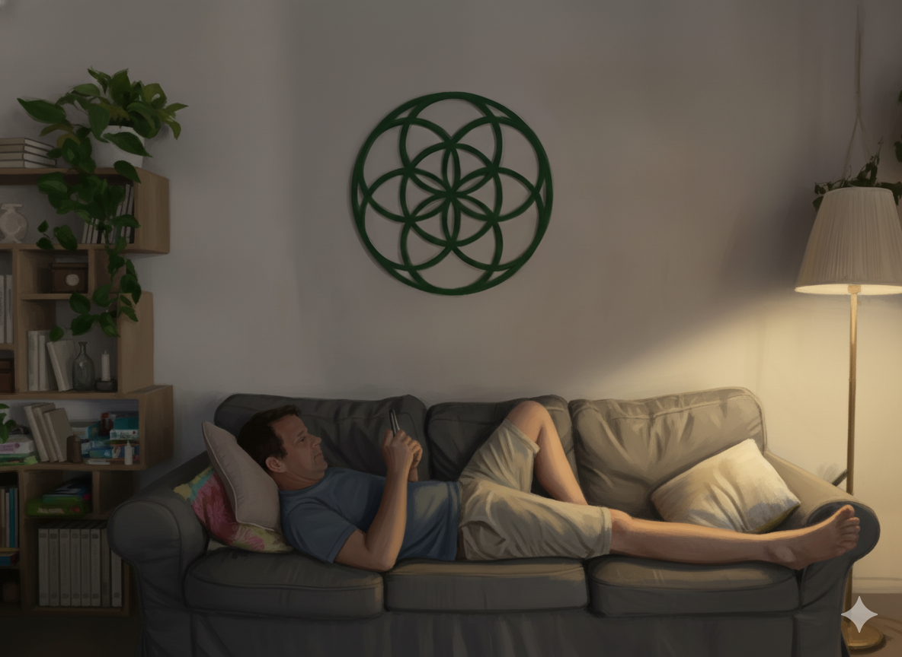
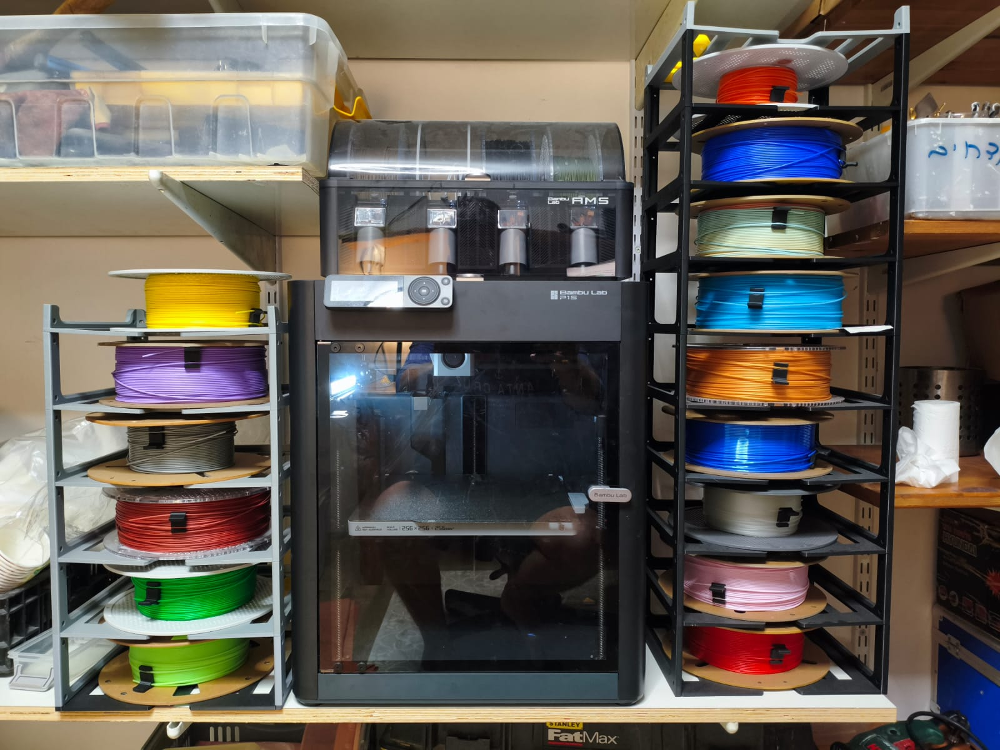
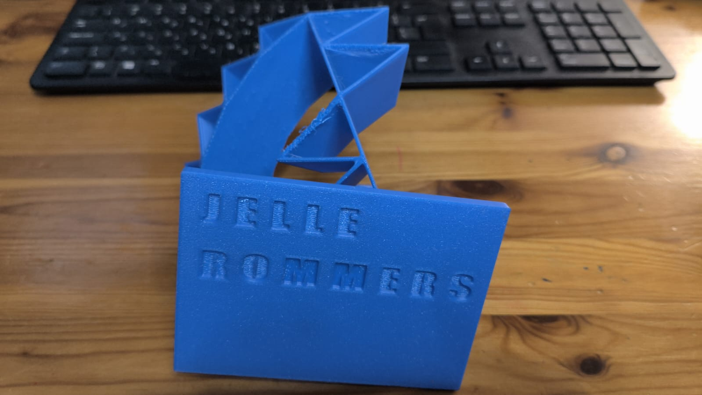
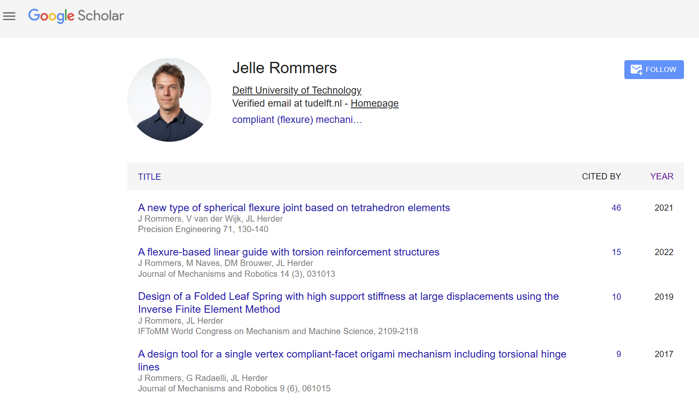
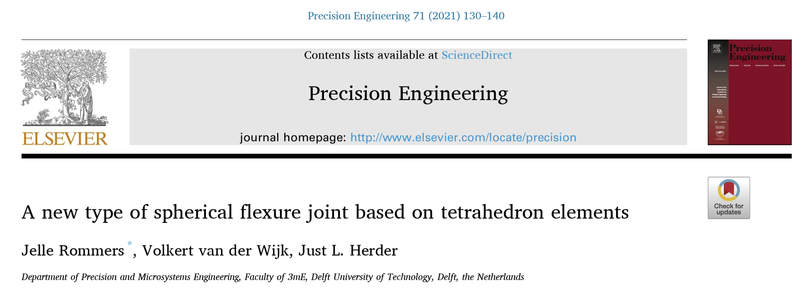
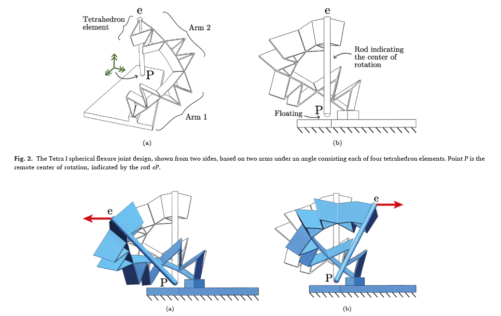
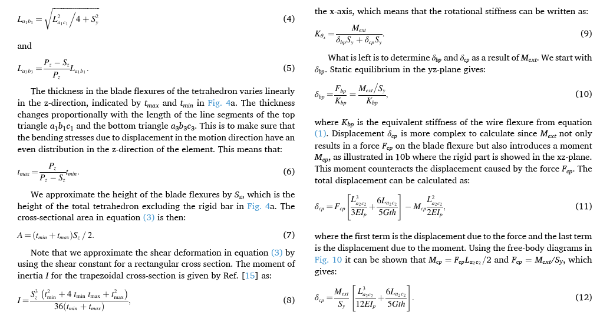
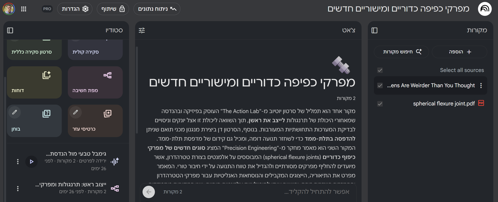
למידה אותנטית מול הפרדיגמות השולטות
| הפרדיגמות השולטות באקדמיה | מאפייני למידה אותנטית |
|---|---|
| המרצה כמוקד הידע | הידע מבוזר |
| למידה מובנית סביב סילבוס קבוע מראש | מסלול הלמידה גמיש, דינמי ולא לינארי |
| הערכה סטנדרטית, טקסטואלית ומכוונת ציון | הערכה מבוססת יישום |
| הפרדה דיסציפלינרית | אינטרדיסציפלינריות כברירת מחדל |
| הסטודנט כצרכן פאסיבי של ידע | הלומד כיוצר אקטיבי |
| עליונות המחקר על פני ההוראה | עליונות היישום על פני התיאוריה |
| למידה בזמנים מוכתבים על ידי מערכת השעות | למידה מבוססת הספק |
| מרחב בחירה מוגבל ומדומה | אוטונומיה מוחלטת ללומד |
הבינה נכנסת לתהליכי הלמידה. היא נכנסת גם לתהליכי המחקר.
היא מייתרת שטחים נרחבים בשניהם.
מה מקומה של האקדמיה בעולם הזה?
ומה תפקיד הדיקנט
בתוך המהפכה הזו?
לסיכום
- שינוי המיינדסט. מכלי מזדמן לשותף עבודה - ההבדל הוא בהקשר ובמיומנות השימוש, לא בכלי. ואבטחת מידע קודמת לכל.
- שוויון הזדמנויות ומניעת נשירה. אותו כלי סוגר פערים או פותח אותם - הליווי הוא ההבדל. הדיקנט רואה את האותות, והבינה יודעת לעבד מאסות של ידע למגמות.
- קשב, לקויות למידה ונגישות. מתיקון להגברה: הבינה מחצינה את התפקודים הניהוליים. חמש טכניקות מוכנות - ומישהו צריך ללמד אותן.
- התייעלות ארגונית. זיכרון ארגוני שנבנה לבינה ולא לבני אדם, נוטבוק ו-Gem כמומחים שמורים, וסוכנים כחזית הבאה.
- למידה אותנטית ותפקיד האקדמיה. הבעיה מעולם לא הייתה הכלי אלא המוטיבציה - והשאלה על מקום האקדמיה והדיקנט נשארת פתוחה.
מה לוקחים מהשיחה? הצעות:
אופן השימוש, ההקשר והמוטיבציה - כן.
הגדירו יעדים, תנו לכלי להציע את הדרך.
ניהול הידע והזיכרון הארגוני, מענה פרסונלי לסטודנט, וכלים חדשים כשירות - והמשמעות היא הגברה בכל מדדי השירות של דיקנט הסטודנטים.
מה שנעשה עכשיו הוא טעימה.
נתנסה בכמה כלים בידיים שלכם,
כדי שתרגישו את היכולות - לא כדי לסיים משהו.
הטמעה אמיתית היא לא סדנה. היא תהליך.
גאנט של הטמעת בינה מלאכותית בעבודת הדיקנט, לאורך זמן.
תודה
תום הגלעדי
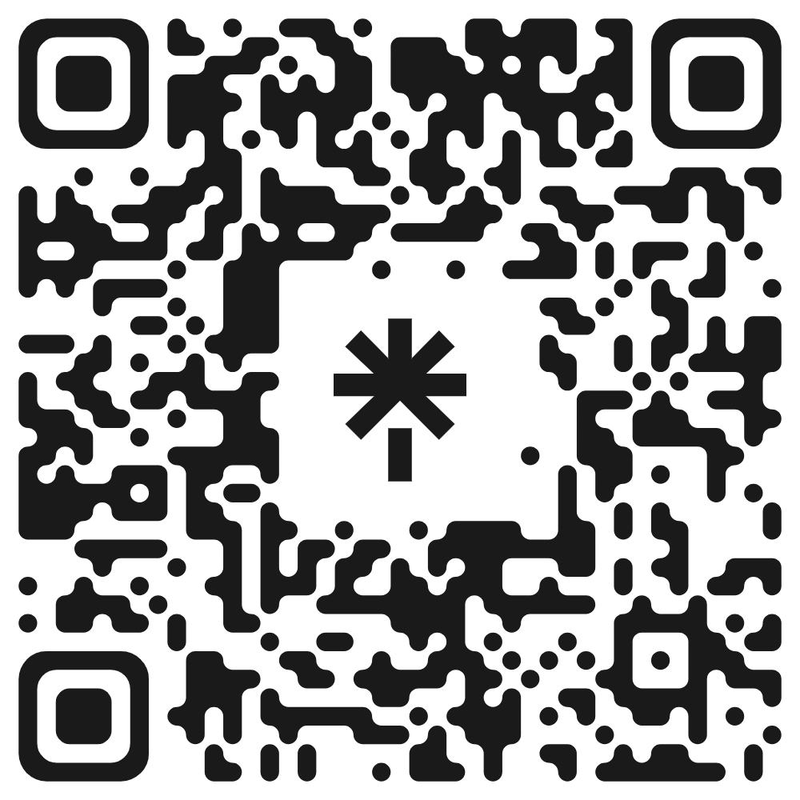